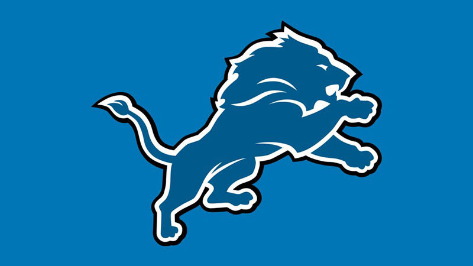
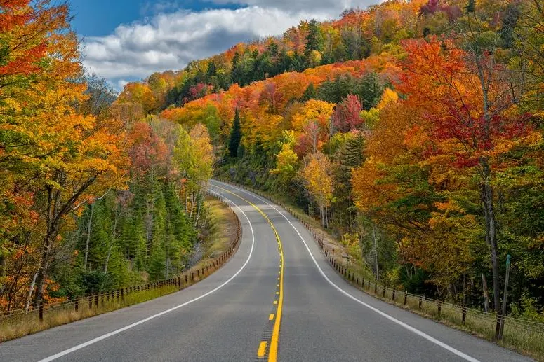

The Detroit Lions
Published: 10/27/2023 Author: Alex Stornant

In a world where it's 2023, the Detroit Lions have defied all odds and emerged as a force to be reckoned with in the NFL. With a remarkable 5-2 start to the season, they've captured the hearts of their fans and instilled hope for a Super Bowl victory.
Under the guidance of their skilled head coach and a revitalized roster, the Lions have undergone a stunning transformation. Quarterback precision, dominant defensive plays, and clutch performances have been the cornerstones of their success. The Motor City has erupted in excitement, as fans eagerly anticipate the possibility of a championship.
The resilience and teamwork of this Lions squad are awe-inspiring. Players like the young star quarterback and the tenacious defense have electrified the field. The entire city is rallying behind their beloved team, believing that this could be the year they break the Super Bowl curse.
As the 2023 season unfolds, the Lions are making a statement to the league, proving that they are not just contenders but favorites for the coveted Super Bowl title. In a world where dreams turn into reality, Detroit is a city alive with football fever, brimming with hope, and poised for gridiron glory.
Below are some statistics for each player currently as of 10/27
| First |
Last |
Yards |
| Jared |
Goff |
1902 |
| David |
Montgomery |
385 |
| Amon-ra |
St. Brown |
557 |
Fall Colors
Published: 10/27/2023 Author: Alex Stornant

As the calendar turns to autumn, a breathtaking transformation takes place in forests and parks around the world. Trees that once displayed lush, green canopies now explode with a kaleidoscope of reds, oranges, yellows, and browns. But have you ever wondered why leaves change colors as fall arrives? Let's explore the fascinating science behind this annual spectacle.
During the spring and summer, the dominant green color of leaves is attributed to chlorophyll, a pigment essential for photosynthesis. Chlorophyll captures sunlight and converts it into energy, enabling the tree to produce food. However, as days grow shorter and temperatures drop in the fall, trees receive signals to prepare for the winter months.
As chlorophyll production slows down and eventually ceases, other pigments, like carotenoids, come into play. Carotenoids are responsible for the vibrant yellows and oranges seen in leaves. These pigments were present in the leaves all along but were masked by the green chlorophyll during the growing season.
In some trees, especially maples, anthocyanins take center stage, creating the striking red and purple hues. These pigments are produced in response to the breakdown of sugars trapped within the leaf. The colder nights of autumn play a crucial role in this process, enhancing the production of anthocyanins and intensifying their colors.
The brilliance of fall foliage can vary from year to year. Weather conditions, particularly the combination of sunlight, temperature, and rainfall, have a significant impact on the intensity and duration of the fall colors. A dry summer followed by a crisp, sunny autumn often results in the most dazzling displays.
The beautiful transformation of leaves during autumn is nature's way of preparing trees for the harsh winter ahead. It's a visual feast, a farewell performance by the leaves before they flutter to the ground. So, the next time you find yourself surrounded by the vibrant hues of fall, remember the intricate science behind the spectacle, and appreciate the artistry of nature in all its glory.